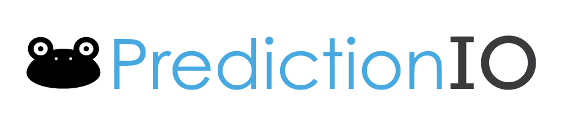
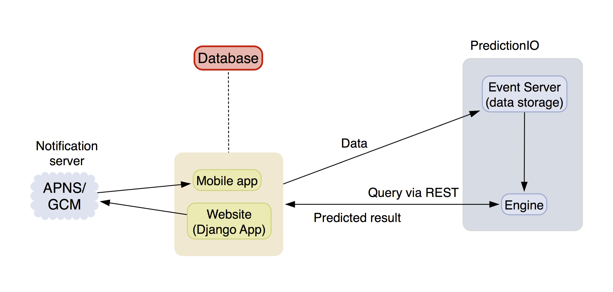

Our solution
In a few words, we came up with a way to integrate the web and mobile interfaces such that, in the majority of the cases, will allow the user to skip entering a password. To reinforce this, the solution also integrates a prediction engine that, using historical data based on time, date and location, will learn to predict when the legitimate user is attempting to log in to the system.
Targeted platforms
The project aims to develop a fully functional Django web application and a native iOS application, in addition to the supporting subsystems. The reason why we have chosen this is because in order to implement fingerprint authentication it is necessary to use native support, which cannot be interfaced with a hybrid web app (i.e. Cordova). If the time will allow, we will attempt to port the iOS app to Android.
Technologies to be used
The entire system may be divised in 4 broad subsystems:
The web app

We plan to use the Django framework for deloping the web interface, because it is widely documented on the web and because it provides us with the functionality we need, such as the Object-Relational Mapping (ORM) layer which abstracts relational database read, write, query, and delete operations. We have limited experience programming in Python, but learning it this should not be a considerable challenge. Also, the use of templates will facilitate development and enable us to finish this part of the project faster.
The mobile app

The iOS app will be developed using Xcode and Swift. Although our team has experience in Objective-C, we want to use the latest standards to ensure maximum compatibility and also it means we will learn new and useful skills on the way.
The database

PostgreSQL is faster and easier to debug than other relational databases. It is capable of handling many tasks more efficiently. Support for concurrency is achieved without read locks thanks to the implementation of Multiversion Concurrency Control (MVCC). It is also a better choice when data integrity and reliability come first. We plan to use this for the user table, and extend it if other functionality is implemented.
The prediction engine
PredictionIO is an open-source Machine Learning server that allows building and deploying predictive applications in a fraction of the time. It is built on top of Apache Spark, and is written in Scala. It uses Hbase as its data storage system and provides APIs (including Python) to connect to external applications. We are very keen on using this because it also provides engine templates for us to use and tweak as we find suitable. We will first install this on our local machines, and will request access to a departmental server at a later stage.
System architecture
This architecture schema encompasses our approach to developing this system. We will first start by developing the web and mobile backends that run on basic frontends. After we manage to get both interfaces to talk to the database, we will then split the work in refining the UI and implementing the prediction engine.
Initially, this will be isolated from the rest of the system, and will be tested with hand-written historical data. Selecting and tweaking the learning algorithm might take a considerate amount of time, but we plan to seek help if this proves to be too big a challenge, considering that we are not familiar with advanced statistical methods.
Once we achieve good results from the learning mechanism, we will link this to the application server in order to retrieve data and deliver the login token. Also, we will need to register the app with Apple's push notification server in order to notify the user about ongoing web login attempts.